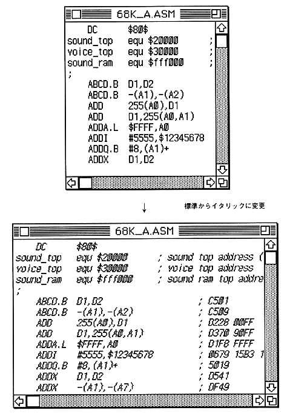

Return to previous page ｜ Return to menu ｜ Go to next page
-
Text style
- Changes the character style of the active text window.
It can be set to standard, bold, italic, underline, outline, or shadow. After changing, all the characters in the screen will have the set character style.

Return to previous page ｜ Return to menu ｜ Go to next page